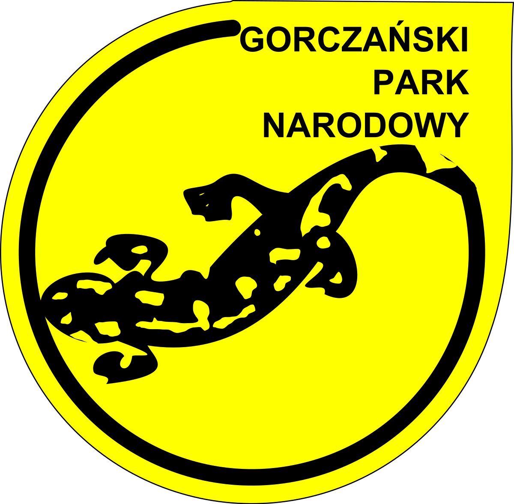

Gorczański Park Narodowy
Gorczański Park Narodowy został utworzony w 1981 roku. Jego powierzchnia wynosi obecnie 70,30 km². Znajduje się on w województwie małopolskim, pomiędzy Rabką i Nowym Targiem. Symbolem parku jest salamandra plamista – jaszczur ognisty, prowadzący samotny, drapieżny tryb życia. Jej nazwa najprawdopodobniej sięga rodowodem języka perskiego, w którym salamandra oznacza „żyjąca w ogniu”. Park swoim zasięgiem obejmuje najciekawsze, centralne pasmo Gorców, w tym masywy Turbacza i Gorca. Lasy stanowią aż 95% powierzchni parku, liczne są w nich drzewa w wieku powyżej 100 lat. Największym bogactwem gór jest puszcza karpacka. Można tutaj spotkać choćby dzika, jelenia, wydrę, borsuka, czy też gronostaja. Jednak to polany stanowią najbardziej charakterystyczny element gorczańskiego krajobrazu.